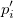
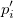
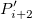
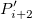
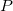
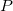
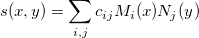

XYからZを補間ツールを使用すると、補間/補外のためにXY値のセットを指定できます。これにより、不等間隔のXYデータセットの2D補間/補外における追加の自由度を提供します。Originは、XYからZを補間するための8つの補間手法をサポートしています：近傍、ランダムKriging法、ランダムRenka Cline法、ランダムShepard法、ランダムTPS法、スプライン、三角、加重平均法
2D補間/補外を使用すると、既存のXYZデータに対しての特定のXYデータセットの補間/補外や、特定の行列オブジェクトに対しての補間/補外が可能です。
XYからZを補間ツールを使用すると、補間/補外のためにXY値のセットを指定できます。これにより、不等間隔のXYデータセットの2D補間/補外における追加の自由度を提供します。Originは、XYからZを補間するための8つの補間手法をサポートしています：近傍、ランダムKriging法、ランダムRenka Cline法、ランダムShepard法、ランダムTPS法、スプライン、三角、加重平均法
XYからZを補間するためのダイアログコントロールの詳細については、X functionのドキュメントinterp2を参照してください。
2次元の補間/補外は、Originの行列に保存されているデータに対しても実行可能です。Originは、行列を補間するための5つの補間手法をサポートしています：近傍、Bilinear、Bicubic、スプライン、BiquadraticXとYの補間出力範囲を指定することも可能です。
| 再計算 |
分析結果の再計算の設定を変更します。
詳細情報は、 分析結果の再計算をご覧下さい。 |
|---|---|
| 入力行列 |
補間/補外を行うデータを含む行列を指定します。 範囲の設定に関する詳細は、入力データを指定するをご覧ください。 |
| 手法 |
補間/補外の手法を指定します。
|
| 列数 |
出力行列の列数を指定します。 |
| 行数 |
出力行列の行数を指定します。 |
| 欠損値の前処理 |
2D補間で欠損値を前処理する方法を指定します
|
| 座標 |
出力行列の座標値/XYマッピングを指定します。
|
| 出力行列 |
補間/補外したデータの出力行列を指定します。 |
近傍（最近傍）補間:
最も近いグリッドポイントを使用して補間値を計算します。
多項式補間:
Bilinear、Biquadratic、Bicubic、Bicubic Lagrangeの手法があり、同じように動作します。例えば、Biquadratic 補間法で 点における値を計算するには、最初に、データポイント, }\!") ,
, }\!") に基づいて、1Dの二次補間を垂直に実行してを作成し、同じ
に基づいて、1Dの二次補間を垂直に実行してを作成し、同じ 値を持つを生成します。そして と  を計算します。値
値を持つを生成します。そして と  を計算します。値  , , は、を通る直線を定義します。次に、1Dの二次補間を水平に実行し、における値を計算します。
, , は、を通る直線を定義します。次に、1Dの二次補間を水平に実行し、における値を計算します。
Bilinear、Biquadratic、Bicubic、Bicubic Lagrange 法の違いは、 次数の異なる多項式を使うことです。次数 n個の点を通る次数 n-1の補間多項式は、
 = \cfrac{(x-x_1)(x-x_2)\cdots (x-x_{n-1})}{(x_0-x_1)(x_0-x_2)\cdots (x_0-x_{n-1})}y_0")
(x-x_2)\cdots (x-x_{n-1})}{(x_1-x_1)(x_1-x_2)\cdots (x_1-x_{n-1})}y_1+ \cdots")
スブライン補間:
この方法は、次式によるbicubicスプライン の値を計算します：

とは正規化した3次B-スプラインを指し、はスプラインの定数です。
2次スプライン補間についての詳細は、NAG関数のドキュメントe02decをご覧ください。